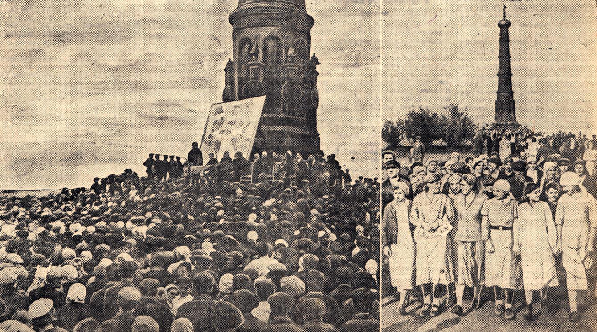
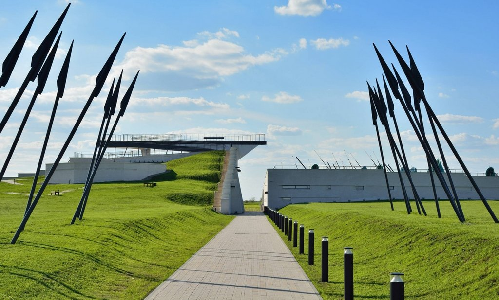
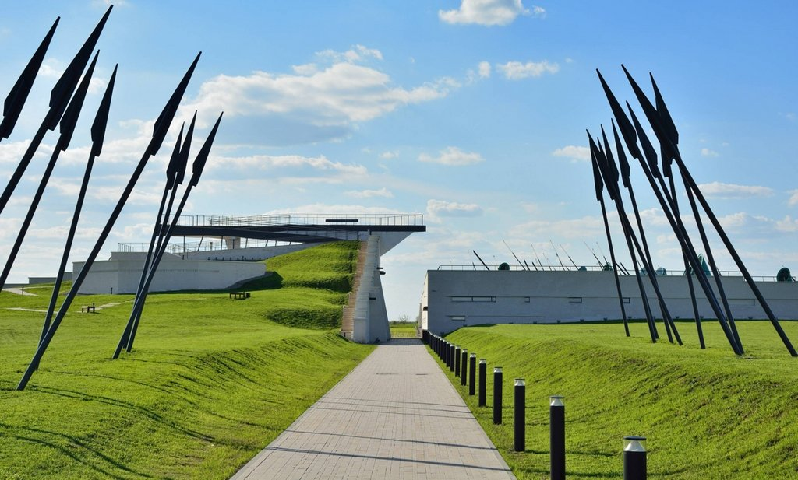
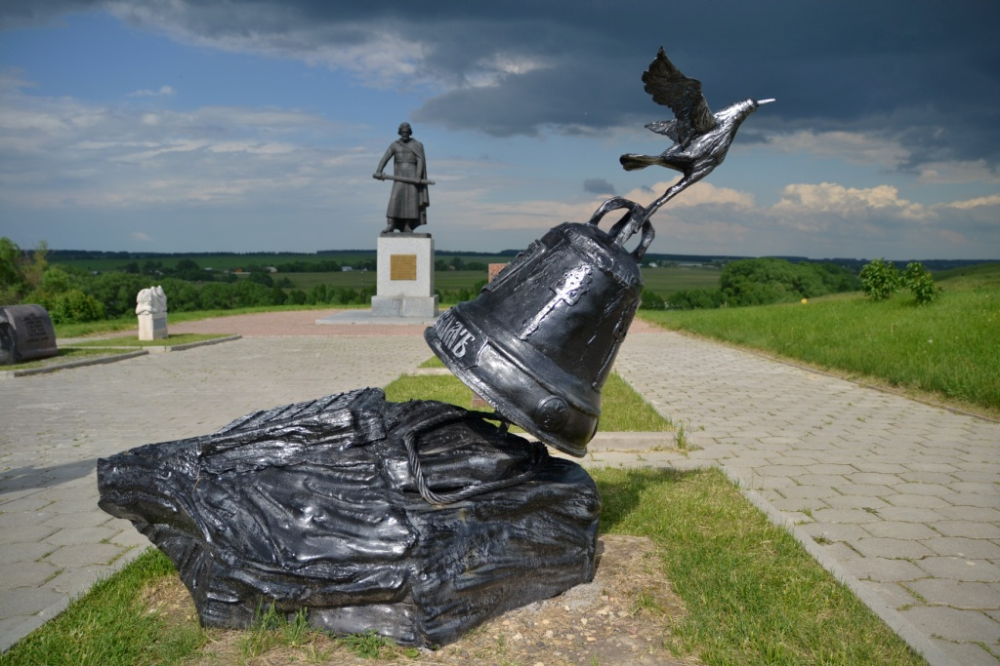
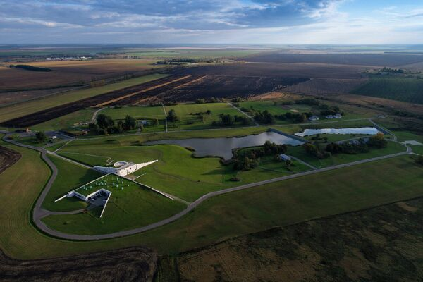
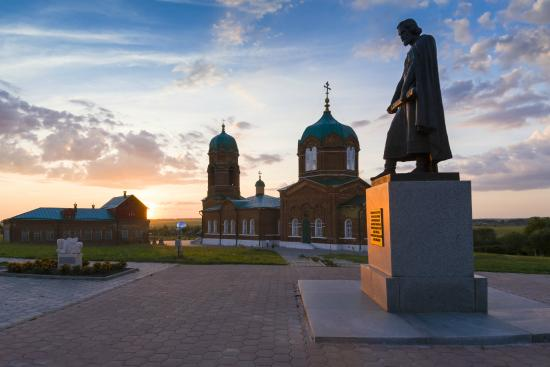
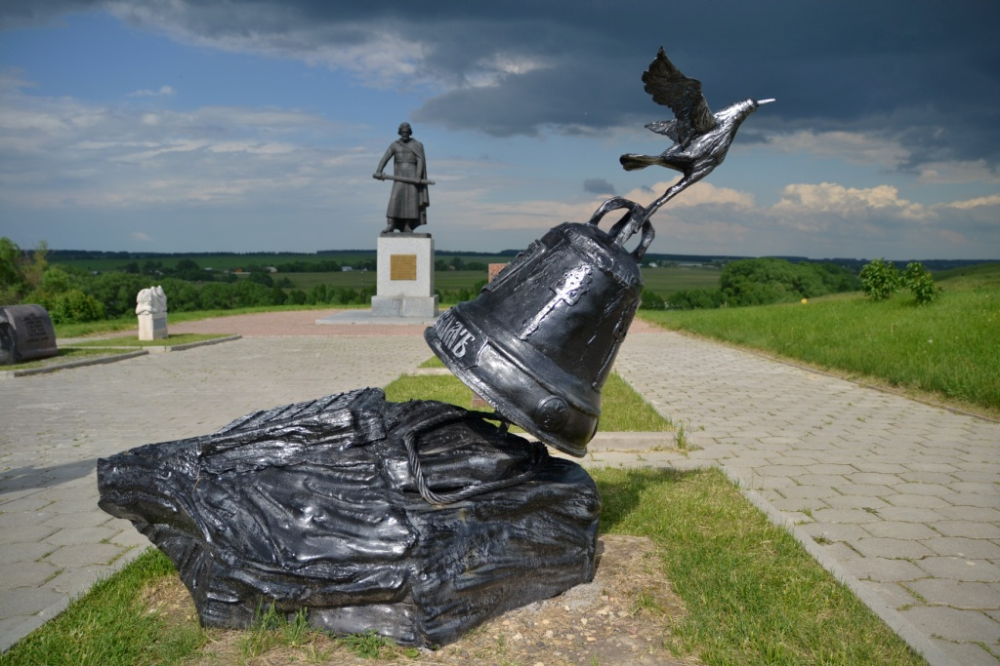
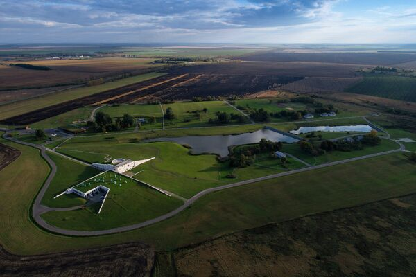
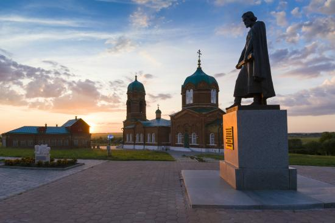

Куликово поле
«Куликово поле» — уникальный мемориальный объект,
напоминающий об одном из важнейших событий в русской истории.
Именно здесь 8 сентября 1380 года произошла битва с ханом Мамаем,
ставшая началом освобождения Руси от татаро-монгольского ига.
25 октября 2016 г. здесь была открыта основная экспозиция
«Сказание о Мамаевом побоище. Новое прочтение». Новый музейный
комплекс оснащен всей необходимой современной инфраструктурой:
бесплатные парковки, центр приема посетителей, кафе, сувенирные
магазины и смотровая площадка.
Наше наследие и память
Создание Государственного музея-заповедника «Куликово поле» было предопределено длительной историей сохранения памяти о великой битве для потомков на Первом поле ратной славы Отечества.
Мемориализация
Первым поселенцам Куликова поля в XVI–XVII веках о знаменательном сражении напоминали находки нательных крестов, сломанного оружия, фрагменты доспехов, которые поднимались с земли во время пахоты. Со временем в местных названиях: Зеленая Дубрава, Непрядва, Дон, Красный холм, Татинские броды, в местных легендах и преданиях накапливалась и передавалась из поколения в поколение народная память о Куликовской битве.
В конце XVII века на легендарной территории возникает поселение в селе Монастырщино. Здесь, на месте легендарных братских могил русских воинов, строится деревянный храм в честь Рождества Пресвятой Богородицы, которым отмечен день знаменательной битвы.
По некоторым данным первый русский император Петр I, наблюдая за строительством шлюзов на Иван-Озере, посетил место сражения 1380 года и заложил основы сохранения памятников Куликовской битвы – повелел охранять от вырубки многовековые дубы Зеленой Дубравы.
В XIX веке по инициативе тульских помещиков и представителей властей поднимается вопрос об увековечении памяти героев Мамаева побоища. Тогда были определены основы всех последующих решений по мемориальному строительству на Куликовом поле. Планировалось возведение обелиска Дмитрию Донскому и храма Сергия Радонежского, а также строительство жилья для инвалидов наполеоновских войн, которые должны были охранять мемориал и рассказывать посетителям о сражении.
Памятник Дмитрию Донскому, автором которого стал архитектор Александр Павлович Брюллов, был установлен на Красном холме в 1849 году, а торжества по случаю его открытия в 1850 году стали первыми праздничными мероприятиями, посвященными годовщине битвы. В 1865–1896 годах на месте деревянного храма в селе Монастырщино строится каменная церковь Рождества Богородицы (архитектор Александр Гаврилович Бочарников). Идею о создании храма-памятника Сергия Радонежского удалось воплотить в жизнь лишь в начале XX века, он возводится на Красном холме в 1913–1917 годы.
К концу XX века мемориалы Куликова поля приходят в упадок, храмы закрываются, обелиск ветшает. Работы по реставрации памятников и благоустройству территории начинаются лишь в 60-е годы, когда здесь открывается филиал Тульского областного краеведческого музея. В это время создаются первые небольшие выставки, начинают приниматься меры по охране Куликова поля.
Новейшая история Куликова поля
В 2010 году храм Сергия Радонежского был передан в полное ведение Свято-Троицкой Сергиевой Лавры, и музей на Красном холме прекратил свою работу. В том же году правительством Российской Федерации было принято решение о строительстве на Куликовом поле нового музейного комплекса. 8 ноября 2011 года недалеко от Красного холма у бывшей деревни Моховое был установлен закладной камень.
Строительство нового музейного комплекса – новый этап мемориализации места Мамаева побоища. Перед его создателями стояла непростая задача: соединить прошлое, которое хранит Куликово поле и его мемориалы с современностью, требующей самых свежих идей и способов подачи исторического материала. И, как сверхзадача – создание посыла будущим поколениям, которые также как их предки, будут обращаться к средневековым событиям в поисках образов для подражания.
Проект Музейного комплекса «Куликово поле» в Моховом был разработан заслуженным архитектором России Сергеем Викторовичем Гнедовским, неоднократно освещался в профильных изданиях, был принят профессиональным музейным сообществом, а также премирован на архитектурных конкурсах. Строительство музейных корпусов было завершено в декабре 2015 года, 30 декабря здесь начал работать Детский музей «Один в поле не воин». В мае 2016 года в новом комплексе была открыта первая выставка – «Художники победы».
14 октября 2020 года музею-заповеднику исполнилось 24 года. За это время были отреставрированы храмы и памятники, заложена аллея Памяти и Единства, начаты грандиозные работы по восстановлению знаменитой Зеленой Дубравы и исторического ландшафта поля битвы, открыты музеи и созданы экспозиции. Куликово поле превратилось в огромный комплекс с историческими и природными достопримечательностями, развитой современной инфраструктурой, включающей все необходимое для комфортного погружения в историю родной страны.
Фото
 

 




